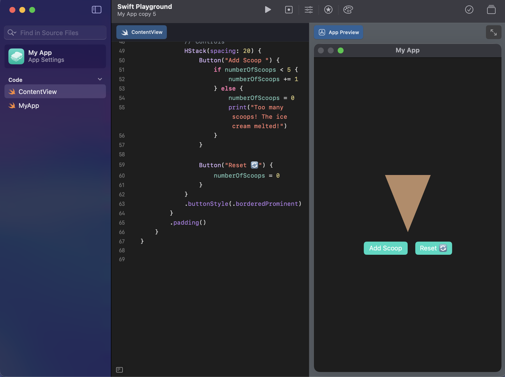

Projects
üç¶ Ice Cream Cone App
This SwiftUI project demonstrates how state management and view composition can be combined to create an interactive and visually engaging interface. The goal of the app was to simulate building an ice cream cone by stacking colorful scoops on top of a cone.
Reflection on the Ice Cream Cone App
The main learning outcome was understanding how @State variables control dynamic changes in the UI. The numberOfScoops state determines how many scoops are displayed, and SwiftUI automatically re-renders the view when this value changes. This reactive design pattern makes SwiftUI efficient and intuitive compared to manually updating the UI.
The use of ForEach enabled the app to dynamically generate multiple scoop layers, each assigned a unique color from a predefined array. The ZStack and VStack combinations allowed for layered and vertical stacking, which made it simple to position scoops correctly above the cone.
Additionally, I explored animation in SwiftUI using the .animation(.spring()) modifier to create smooth transitions when adding or resetting scoops. This subtle motion gives the interface a more playful and polished feel.
Through this project, I also learned the importance of layout alignment and offset adjustments, which were essential to visually balance the scoops on the cone. Furthermore, handling the “overflow” condition — where too many scoops reset the count — introduced a simple but effective example of conditional logic and user feedback.
üïí Swift Clock App
This SwiftUI project creates a real-time analog clock where you can manually adjust the hour and minute hands. The background color changes based on AM or PM, making it both functional and visually dynamic.

üí° Binary Counter App
This project is a binary counter made with SwiftUI. It visually represents the binary form of numbers using colored rectangles that update in real-time as you increase or reset the counter.
üßÆ Calculator App
A simple and clean calculator app created with SwiftUI. It performs basic arithmetic operations like addition, subtraction, multiplication, and division with an elegant interface.

Calculator Reflection
Swift Calc-Calc Calculator — This assignment was one of the first projects we did, and it was pretty simple to understand. The program takes two numbers from the user and then performs basic operations like addition, subtraction, multiplication, and division. Once the numbers are entered, the calculator instantly shows the results using the logic built into the code. Even though it wasn’t too challenging, it was a fun and satisfying task that helped me get comfortable with Swift and basic user input.
❌⭕ Tic Tac Toe (XOX) Game
This SwiftUI game allows two players to play the classic Tic Tac Toe (XOX) game. It includes win detection, a reset button, and a modern, colorful design.

Scratch XOX Game
This scratch game allows users to play XOX (tic tac toe) made with Scratch visual coding.